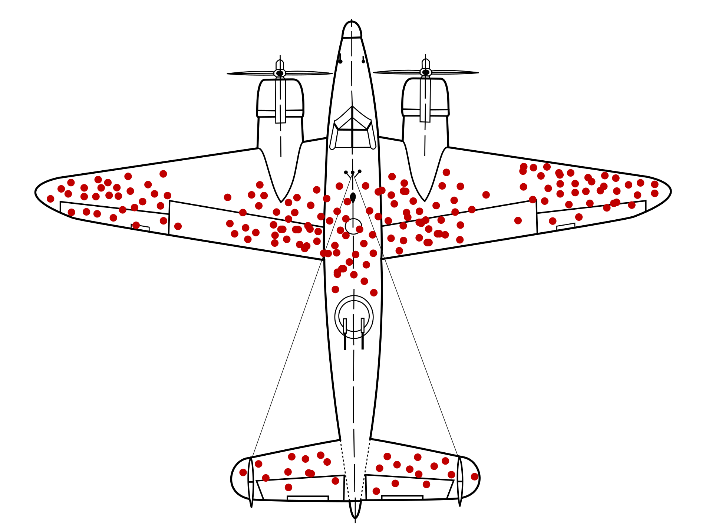
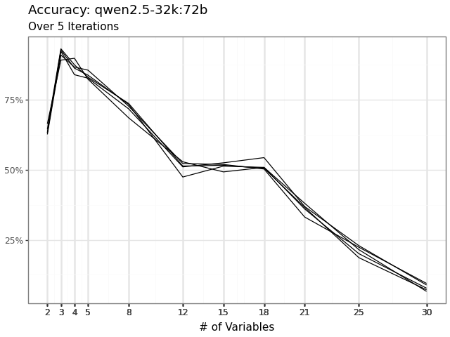
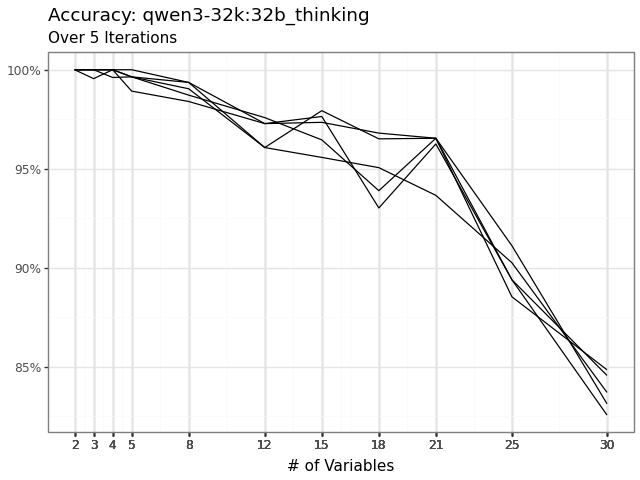
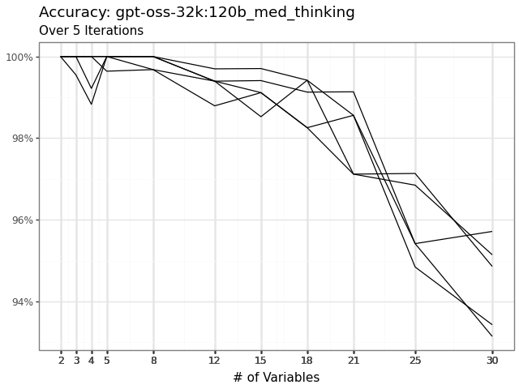

Without the framework
Pick a model that felt good, prompt until the output looked right, report almost none of it.
Beyond the Hype: Using Generative AI in Public Administration Research
A framework for the systematic and responsible use of Large Language Models
Dr. Michael Overton
Associate Professor of Public Administration
Associate Director, Institute for Interdisciplinary Data Science
University of Idaho
Why this matters
Scholars have limited guidance on how to use it rigorously.
A fair objection
You might be saying to yourself,
“That number seems ridiculously high.
I can always spot AI, and I don’t see it THAT often!”
A fair objection
You might be saying to yourself,
“That number seems ridiculously high.
I can always spot AI, and I don’t see it THAT often!”

Why a framework
Pick a model that felt good, prompt until the output looked right, report almost none of it.
Choose the task, agents, model, and prompt deliberately, evaluate purposefully, and report all transparently.
The framework
TaMPER
The framework
TaMPER
Task
agents
Model
Prompt
Evaluation
Reporting
Six decision points for using generative AI with rigor.
T · Decision one
What are you asking the LLM to do?
Task
A task is the set of actions that transform input data into the desired output. Defining one means making three decisions.
| LLM as a human | Predefined example | Undefined example | Type of task |
|---|---|---|---|
| Participant | Survey respondent | Open-ended interviewee | Synthetic Data Generation |
| Coder | Annotate text | Category creation | Text Analysis |
| Human extractor | Identify and extract text | Summarize document | Text Analysis |
Task · In social science
Click a use case to see the task, a sample input, and the output.
Input
LLM
🧠
prompt · model · iteration
Output
a · the silent letter
There is a silent a in TaMPER. Today it stands for Agents.
Agents
Agent = Model + Harness
Harness. The software wrapped around the model that supplies its context, runs the tools it asks for, remembers across turns, and loops until the task is done.
Anthropic calls the base unit the “augmented LLM,” a model plus retrieval, tools, and memory. (Anthropic 2024)
Agents
Pick a wiring shape, then click a tool to give the model a way to act. Every node is an LLM.
An agent is one or more LLM calls, linked together and given tools.
What happens
Agents
A fixed pattern of LLM calls. You design the path in code, and every run follows the same steps.
The model decides the path at runtime. It picks the next step, calls tools, loops, and stops when it judges the task done.
Agents
How complicated the task is. Many steps and deviations from routine, but with clear rules and a checkable answer.
How analyzable the task is. The right answer requires judgment, context, or values, and cannot be cheaply verified.



M · Decision two
Which LLM should you actually use?
Model · Three decisions
Click a decision. The two boxes define each option; the recommendation follows below.
Recommendation
P · Decision three
How do you tell the model what you want?
Prompt
TASK OVERVIEW: Determine whether the news article suggests that {FIRM} engaged in organizational misconduct.NEWS ARTICLE: {NEWS_ARTICLE}
DEFINITIONS:
Organizational Misconduct: "an illegal, unethical, or socially irresponsible behavior performed by an organization that directly harms its stakeholders through fraud, product safety issues, employee mistreatment, and environmental violations."QUESTION: Did {FIRM} engage in organizational misconduct in the news article? Briefly explain your decision. Respond using only one of the following options:
a) yes
b) noINSTRUCTIONS: Before responding, carefully review the TASK OVERVIEW, NEWS ARTICLE, DEFINITIONS, QUESTION, INSTRUCTIONS, and OUTPUT FORMAT. Respond in valid JSON using the key-value pair {"misconduct": <"yes"|"no">, "rationale": "<one or two sentences>"}. Before finalizing, review the DEFINITIONS so the rationale does not deviate from them, and review the NEWS ARTICLE so your decision and rationale do not deviate from it.OUTPUT FORMAT:
{"misconduct": <"yes"|"no">, "rationale": "<one or two sentences>"}Prompt · Components
Click a component to highlight it in the prompt and see its recommendation.
TASK OVERVIEW: Determine whether the news article suggests that {FIRM} engaged in organizational misconduct.NEWS ARTICLE: {NEWS_ARTICLE}
DEFINITIONS:
Organizational Misconduct: "an illegal, unethical, or socially irresponsible behavior performed by an organization that directly harms its stakeholders through fraud, product safety issues, employee mistreatment, and environmental violations."QUESTION: Did {FIRM} engage in organizational misconduct in the news article? Briefly explain your decision. Respond using only one of the following options:
a) yes
b) noINSTRUCTIONS: Before responding, carefully review the TASK OVERVIEW, NEWS ARTICLE, DEFINITIONS, QUESTION, INSTRUCTIONS, and OUTPUT FORMAT. Respond in valid JSON using the key-value pair {"misconduct": <"yes"|"no">, "rationale": "<one or two sentences>"}. Before finalizing, review the DEFINITIONS so the rationale does not deviate from them, and review the NEWS ARTICLE so your decision and rationale do not deviate from it.OUTPUT FORMAT:
{"misconduct": <"yes"|"no">, "rationale": "<one or two sentences>"}Recommendation
Prompt · Developing a prompt
Click a node in the flowchart to highlight the matching step.
Prompt · Before and after
Did the firm do anything wrong in this news article?
Northwind delayed telling employees about layoffs so it would not owe the retention bonuses promised to those who stayed.
“Northwind appears to have engaged in a practice that could be considered ethically questionable…”
About 300 words, and it never commits to a yes or no.
That baseline is fixed. Click a refinement to see the new prompt, the new output, and what improved.
What improved over the original output
Model qwen2.5:72b via MindRouter.
Prompt · Structured output
Structured output forces the model to return a fixed, machine-readable shape, a JSON schema you define, instead of free prose. The model fills the slots you specify and cannot wander outside them.
{
"organizational_misconduct": "yes | no",
"explanation": "string"
}
{
"organizational_misconduct": "yes",
"explanation": "The report details
concealed safety violations."
}
Why it matters. Compliance jumps to about 100 percent, every answer parses the same way, and you can separate what the schema imposed from what the model actually decided.
E · Decision four
How do you know the output is any good?
Evaluation
Treat the LLM as a measurement instrument, not a tool and not a person.
Is the answer right? This is accuracy.
Is the model measuring consistently? This is precision.
validity becomes accuracy, reliability becomes precision, error becomes uncertainty.
Evaluation · Protocol
Every task yields a response and an explanation.
Automate scoring at scale with an ensemble of judges.
Hand-code a small sample, set benchmarks, then run the full population and compare back.
This answers the practical question, how much do I need to hand-code?
Evaluation · Protocol
Scored on compliance, accuracy, and precision.
Scored on quality, and checked with an ensemble of judges.
Evaluating the explanation lets you audit reasoning when there is no single fact to check.
Evaluation · Criteria
Does the output match the required structure?
How close to a reference value?
How consistent across repeated runs?
Logically dependent. Establish each before the next, with quality above the floor.
Evaluation · Compliance in action
Schema match. Are the fields, types, and labels the ones that were requested?
HQ2 case · Compliance (stance detection)
| Model | Established prompt | Revised prompt |
|---|---|---|
| Command A | 99.98% | 100.00% |
| GPT OSS | 100.00% | 100.00% |
| Phi 4 | 100.00% | 100.00% |
| Qwen 3 | 100.00% | 100.00% |
Structured outputs delivered about 100 percent compliance in every cell, so the floor is cleared and we move on.
Evaluation · Accuracy in action
Closeness to a reference, whether objective ground truth or expert human judgment. This is validity in classical terms.
HQ2 case · Accuracy with McNemar (stance detection)
| Model | Established | Revised | McNemar χ² |
|---|---|---|---|
| Command A | 55.19% | 72.78% | 272.0*** |
| GPT OSS | 70.61% | 70.04% | 153.0 |
| Phi 4 | 45.59% | 47.58% | 379.0*** |
| Qwen 3 | 68.58% | 70.02% | 280.0** |
The GPT OSS gap is noise, so the framework sends you to the next criterion. * p<.05 · ** p<.01 · *** p<.001
Evaluation · Precision in action
Output consistency when the same input is run five or more times. This is reliability, not the classification precision above.
HQ2 case · Precision (stance detection, 5 iterations)
| Model | Krippendorff's α | Agreement rate | ||
|---|---|---|---|---|
| Established | Revised | Established | Revised | |
| Command A | 0.71 | 0.95 | 86.97% | 98.01% |
| GPT OSS | 0.89 | 0.90 | 96.06% | 96.44% |
| Phi 4 | 0.72 | 0.81 | 88.03% | 91.89% |
| Qwen 3 | 0.74 | 0.83 | 89.77% | 93.52% |
Precision broke the tie for Command A. Same accuracy region, far tighter agreement, alpha 0.71 up to 0.95.
Evaluation · Scaling
(Angelopoulos et al. 2023, Science)
| Method | Point estimate |
|---|---|
| PPI++ | 2.055 |
| Naive (200 labels only) | 2.160 |
| True population mean | 2.053 |
| Method | 95% CI | Width |
|---|---|---|
| PPI++ | [1.954, 2.156] | 0.202 |
| Naive (200 labels only) | [1.975, 2.345] | 0.369 |
Same 200 labels, 45 percent narrower interval.
Evaluation · Criteria
Compliance, accuracy, and precision are the floor. Quality is the second-order criterion, and it only means something once the floor is cleared.
Fluency and coherence.
Entailment and plausibility.
Factuality, faithfulness, relevance.
Information depth and restatement.
These are the buckets the judges score later. They presuppose a compliant, accurate, precise output.
Evaluation · Worked example
9 quality questions on a 5-point scale, in 4 buckets. Same judge (GPT OSS 120B), same data (400 sentiment outputs by 4 models). Only the prompt changes, three lines added asking the judge to be extremely harsh but fair.
Mean rating across 4 models, Not Harsh to Harsh
| Linguistic | Logic | Information Fidelity | Informativeness | |||||
|---|---|---|---|---|---|---|---|---|
| Fluency | Coherence | Entailment | Plausibility | Factuality | Faithfulness | Relevance | Information | Restatement |
| 4.58 | 4.87 | 4.94 | 4.07 | 4.75 | 4.45 | 5.00 | 3.83 | 4.36 |
| 4.36 | 4.21 | 4.87 | 3.81 | 4.60 | 4.35 | 5.00 | 3.73 | 4.27 |
| −0.22 | −0.65 | −0.07 | −0.26 | −0.16 | −0.10 | 0.00 | −0.10 | −0.09 |
■ Not Harsh · ■ Harsh · ■ Δ
R · Decision five
Make the whole thing reproducible.
Reporting · Reproducibility
Input data, preprocessing such as OCR, tokenized descriptive statistics, desired output.
Model selected, models tested, hyperparameters, date accessed.
Full prompt template, and the number of calls per item.
Protocol, criteria, benchmarks, and any bias or privacy notes.
Reporting · The checklist
Click a section, then a line in its checklist, to see a reported example from the Amazon HQ2 stance-detection study.
Checklist
Reported example
Thank you
Dr. Michael Overton